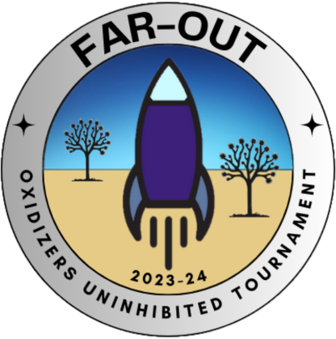

Space

I am a pretty big space fan and I enjoy doing various projects relating to aerospace. I also have a lot of opinions about the commercial aerospace industry specifically, so I guess they might pop up on here once in a while.
Making the Friends of Amateur Rocketry: Oxidizers Uninhibited Tournament (FAR-OUT)
July 2023-present
Throughout my time at Columbia, I had been involved heavily in the student rocketry community. I worked diligently to keep the Columbia Space Initiative Rocketry Team at the top of its game, and I enjoyed so much the opportunities that the Spaceport America Cup gave - namely, the invaluable opportunity to meet other rocketeers from around the world, who had all tried various solutions to the same problem: How to make a rocket go up, come down, and have a payload that does something cool somewhere in between.
However, Spaceport had its drawbacks, the primary one being that its support for hybrids and for liquids lagged behind the support for their solid-engine counterparts. This has a simple explanation: The senior leadership behind ESRA (and the Tripoli Rocketry Association that is now a crucial component of the event) are hobbyists, and hobbyists do not have the capital nor time to work and gain experience on these more complex motors. The result of this can be devastating for teams, especially when it comes to logistics on the field.
After the events of 2023 Spaceport, Peter Tarle and I put our heads down to create a new competition in collaboration with the Friends of Amateur Rocketry to support hybrids and liquid engines specifically. FAR-OUT is not bound by TRA insurance rules, as teams come in covered by their own insurance policies, and the FAR facility is especially friendly and open to research rocketry projects. We have created the rules from scratch specifically to support our team's use cases, with an emphasis on safety while maintaining an openness to various experimental designs and materials.
The 2023-24 school year is our first year of this, and so far I am excited for what is to come! We have had 13 teams apply - 6 hybrid and 7 liquid teams - with 11 from the United States, one from Poland, and one from Canada. We have partnered with the Mojave Air & Space Port to host the conference portion and we continue to seek out more volunteers and sponsors in preparation for what we are expecting to be an amazing event! I am running the logistics primarily, coordinating with teams, organizing sponsorship and finances, and chatting with our volunteers. So far this has been a great ride and I cannot wait for what it will look like just a few months down the line!
Rockets: Fin can
Fall 2021-Spring 2022
For the CSI Rocketry Team, as Airframe co-lead, I led the design and manufacturing of this year's fin can. I tried to actually keep it to the same design that we had three years ago, but focused on teaching all the new members what it is like to work with composites (and also give myself a refresher too). The fins were manufactured in the following general steps:
1. A board of G10 fiberglass was laid up with two plies of carbon fiber on both sides. This
involves putting a layer of epoxy resin in between each layer, covering with peel-ply and
breather, and then vacuum bagging and letting cure for 12 hours. In this step, we used West Systems
306 Epoxy Resin.
2. Using a water jet, the shape of the fins were cut out of the board (4 total).
3. Using a CNC mill, we beveled the top two edges of the fins and filed them down a bit by hand
afterwards to create a nice rounded edge.
4. Using a fin jig we aligned the fins around the body tube used for the fin can and epoxied
them down to the tube using 30-minute epoxy and a lot of patience.
5. We made fillets for each fin by spreading a thin layer of epoxy evenly across the bottoms
of each fin.
6. We did a tip-to-tip layup, where each area of fin-body tube-fin has two plies of slightly-decreasing-sized
carbon fiber, laid up in the same manner as the first few plies. We then stood the fin can upright and
vacuum-bagged it.
7. Here's where I messed up - I used the same resin as I did for the layup to coat the fin can for a nice
shine. The move really was instead to use a different, less thick epoxy - but it looks beautiful so I
don't mind!
That thing passed all tests imaginable and is absolutely rock-solid. And completely doable! After having difficulties in manufacturing other airframe components, having a successful fin can that was even more stable than those of more established teams was a large win for airframe. Have yet to test it out though, so we'll see!
Quantum Numerics: N-body simulations and data visualization
Spring 2020 - Spring 2021

During the first year of the pandemic, I had the pleasure of working with the folks over at Quantum Numerics AG in Germany as a Research and Development Intern. There, I had a great time gaining exposure to GPU processing and optimization, physics modeling, and visualization. I especially loved working with DeckGL for the first time, modeling space debris and building a small applet that could host my own visualization of all debris in our atmosphere under 2cm! I cannot share much more than this of course, but here is the picture I created! It was created with a DeckGL Point-Cloud Layer that also was interactive, where you could mouse over the point in order to read information about the piece of debris at that location, if available. Many thanks again to the team at Quantum Numerics AG for the first internship that I have ever had!
I am a Brooke Owens Fellow!
Fall 2020 - Spring 2021
I am so happy to be able to finally announce that I am a Brooke Owens Fellow for the Class of 2021! The application process was unlike anything that I have gone through before, with many essays (and the video on my About page) submitted, multiple interviews with companies and Fellows, and generally much anxiety throughout the entire Fall semester.
My host company is Planet Labs, a company which I have been personally a huge fan of ever since I have gotten into learning about and keeping up with the aerospace industry. The work that is being done on their end, in terms of high-quality satellites, imaging, and processing is among the best in the satellite industry as a whole and I am so excited to be able to go to San Francisco this summer and see what it is all about. I will be working on the Mission Operations team, most likely doing work that I have never done before, and I am looking forward to the learning experience that it will bring.
I am also very grateful for the amazing women and gender minorities that the Brooke Owens Fellowship brings together. Everyone I have met so far is so smart, so kind, and it very much amazes me how many people are out there that enjoy aerospace. Columbia University does not have an Aerospace Engineering degree or track, so outside of the Columbia Space Initiative I do not get to interact with many people who enjoy aerospace as much as I do. I hope that by being surrounded by all of these wonderful people I can learn a bit about what they are doing and about aerospace as a whole!
Redesigned Mercury Comms Display
Fall 2020
As part of the Aerospace Human Factors Engineering course, taught by Prof. Mike Massimino (our resident astronaut and cool guy), our goal for the course was to work on redesigning a subsystem of the Mercury spacecraft. For what it's worth, the Mercury spacecraft was not very-well designed, and technology has advanced in almost every field such that many of the systems they had at the time could be rendered obsolete.
My partner Henry Manelski and I chose to redesign the communications display. Several problems with the initial communications system were that it relied on ground stations for connection (which resulted in frequent blackouts), it did not warn astronauts of approaching losses-of-signal or when they would acquire it, and knowing whether the audio/telemetry sending was on or off was anyone's guess. It was also not clear whether the audio was off due to a scheduled blackout or a system malfunction.
Our solution was to revamp the display to include color-coded indicators for various system states, as well as countdowns until LOS and AOS. The issue of frequent blackouts is solved at a system level, wherein the audio signal connects to geostationary TDRSS satellites which have long been the standard of communication in space.
This space display demo uses tkinter and Pillow. The colors of the indicators are as follows:
As part of our project, we also had to design a human factors-focused experiment in order to test the usability and workload of the system. So, we created Modified Cooper-Harper Scales in order to determine the effectiveness of the system.
If you would like to read more about the initial design and how our analysis went, our final paper can be found here
If you would like to see the Python files and look at our README for the experiment, look here.